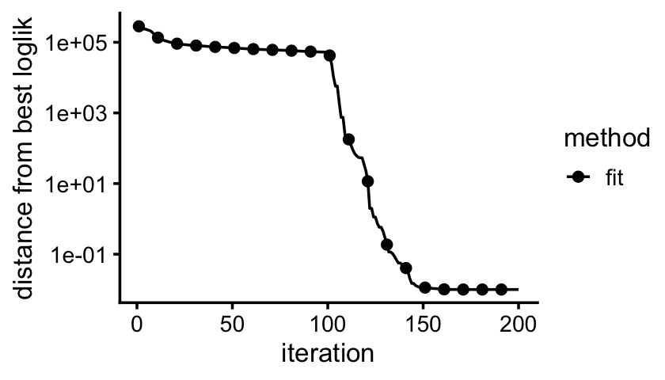
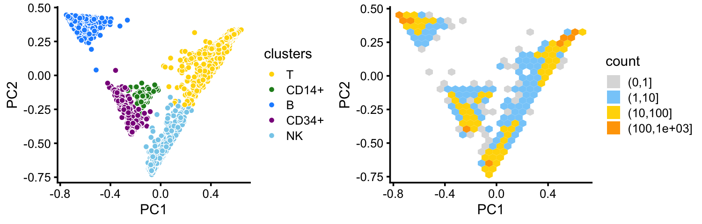
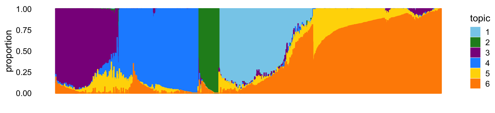
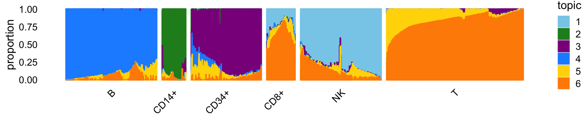
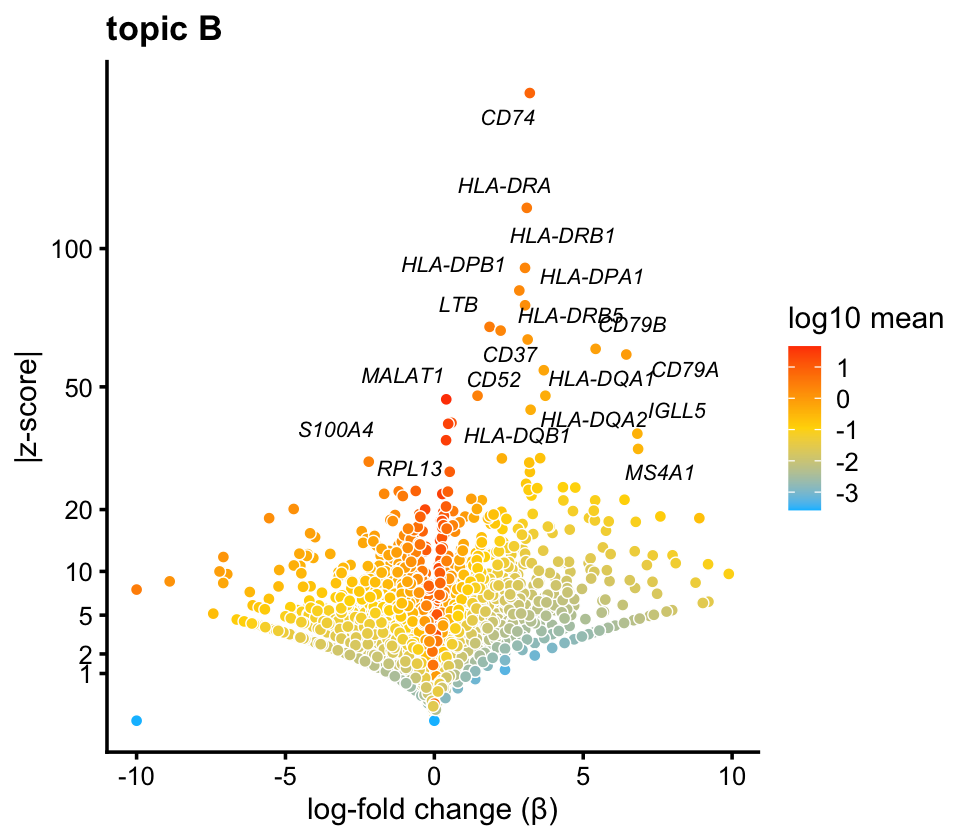
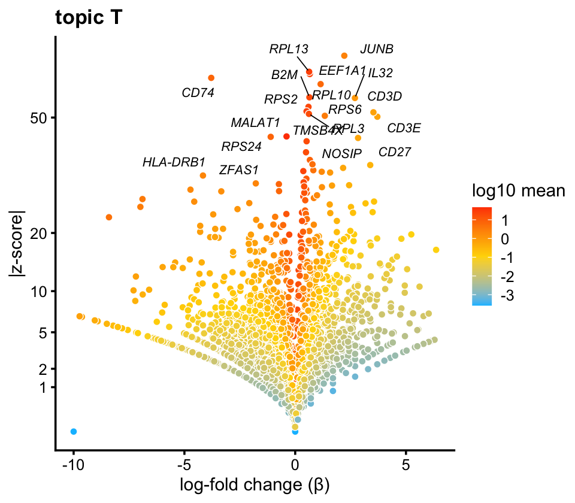
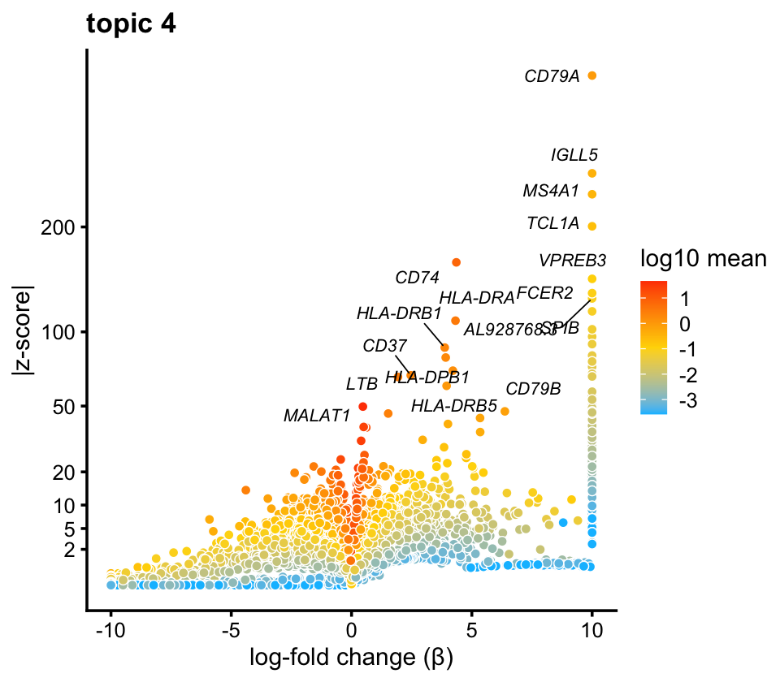
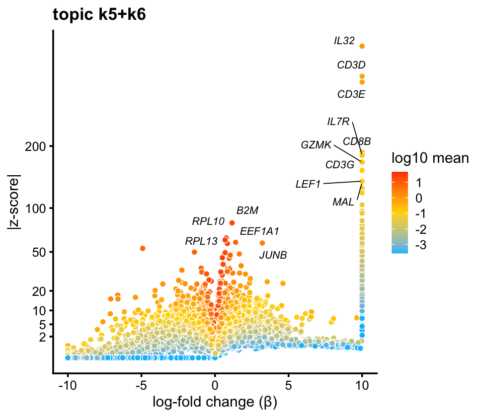
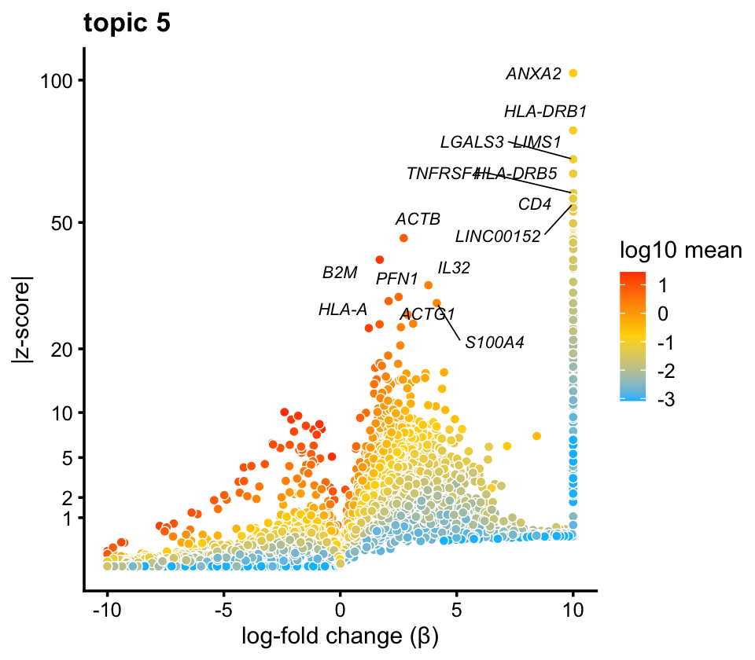

Analysis of single-cell RNA-seq data using fastTopics: an illustration
Peter Carbonetto
2020-12-14
Source:vignettes/single_cell_rnaseq_demo.Rmd
single_cell_rnaseq_demo.RmdHere we illustrate the use of fastTopics to infer structure from single-cell RNA-seq data. A basic analysis consists of the following steps:
Load and prepare the count data.
Fit a Poisson non-negative matrix factorization (NMF) to the UMI count data.
Recover the multinomial topic model—also called the multinomial “grade-of-membership” model—from the Poisson NMF model fit.
Analyze structure in the estimated mixture proportions matrix.
Annotate selected clusters and factors by examining genes that are highly differentially expressed among clusters or factors.
In this vignette, we walk through each of these steps and demonstrate how to implement these steps using fastTopics. In other exploratory analyses, these steps might not be strictly sequential—for example, the annotation in Step 5 may inform the exploration of substructure in Step 4.
Begin by loading the packages used below. The ggplot2 and cowplot packages are used to create some of the plots.
Set the seed so that the results can be reproduced.
set.seed(1)
Load and prepare data
Load the single-cell RNA-seq data:
data(pbmc_4k) samples <- pbmc_4k$samples genes <- pbmc_4k$genes counts <- pbmc_4k$counts dim(counts) # [1] 3774 21952
This data set is made up of reference transcriptome profiles that were generated from 10 different bead-enriched subpopulations of PBMCs (Donor A), as described in Zheng et al (2017). The UMI counts are stored as an \(n \times m\) sparse matrix, where \(n\) is the number of cells and \(m\) is the number of genes.
No normalization or transformation of the UMI counts is needed. The only pre-processing step we take is to remove genes that are not expressed in any of the cells.
j <- which(colSums(counts > 0) >= 1) genes <- genes[j,] counts <- counts[,j] dim(counts) # [1] 3774 16791
As expected, most (>95%) of the UMI counts are zero:
mean(counts > 0) # [1] 0.04265257
Fit Poisson NMF model
By exploiting the relationship between the multinomial topic model and non-negative matrix factorization (we have a vignette elaborating on this relationship), we leverage fast NMF optimization algorithms to fit the multinomial topic model.
We chose \(K = 6\) factors. In practice, you will likely want to explore the results from different settings of \(K\).
Since the model fitting can take several minutes to run, or perhaps more, we have saved a pre-fitted model:
fit <- pbmc_4k$fit
If you would like to see the model fitting in action, run this code:
fit0 <- fit_poisson_nmf(counts,k = 6,numiter = 100,method = "em", control = list(numiter = 4,nc = 2)) fit <- fit_poisson_nmf(counts,fit0 = fit0,numiter = 100,method = "scd", control = list(extrapolate = TRUE,numiter = 4,nc = 2))
(This is the code that was used to generate the stored result.) Before running this code, may want to change control$nc. This controls the number of threads in the TBB multithreaded computations, and for best performance this should be set to the number of availablle processors.
Judging by this plot which shows the change in the log-likelihood over time, the iterates get close to a maxium-likelihood solution after about 150 iterations.
plot_progress_poisson_nmf(fit,x = "iter",add.point.every = 10, colors = "black") + theme_cowplot(font_size = 10)

Some general guidance on model fitting. We have found that the EM algorithm initially makes rapid progress toward a solution, but this convergence slows considerably as the iterates approach the solution. Close to a solution, we have found that other algorithms make much more rapid progress than EM. Therefore, we have taken a two-stage approach to model fitting: first, we perform EM updates; second, we refine the fit using extrapolated SCD updates (we also tried extrapolated CCD updates, and updates without extrapolation, and we found that the extrapolated SCD updates almost always worked best). For larger data sets, more than 200 updates may be needed to obtain a good fit.
Recover multinomial topic model
Once we have fit a Poisson NMF model, the multinomial topic model is easly recovered by a reparameterization:
fit_multinom <- poisson2multinom(fit)
Identify clusters
The topic or grade-of-membership model is able to capture a variety of structure, from discrete (clusters) to continuous. We begin by showing how the model can be used to identify clusters.
Here we apply the simplest clustering method, k-means, to the mixture proportions matrix, \(L\). We experimented with different numbers of clusters and we found that 6 clusters worked best in this example. Note that k-means is sensitive to (random) initialization, so we set the seed.
Note that, in some cases, it may be better to apply k-means to the principal components (PCs) of the mixture proportions, rather than the mixture proportions directly. The PCs can easily be computed using prcomp.
You will find that some visual inspection followed by manual refinement may be needed to get the “right” clustering, regardless of whether k-means or another clustering algorithm is used. By visual inspection, we found that k-means split the largest cluster into two subclusters. After merging these two subclusters, we ended up with 5 clusters:
clusters[clusters == 3] <- 1 clusters <- factor(clusters) summary(clusters) # 1 2 4 5 6 # 1447 207 797 616 707
With the benefit of hindsight, we know that these 5 clusters correspond to 5 cell types: B cells, T cells, natural killer (NK) cellls, CD14+ monoytes and CD34+ cells. (Below we show how to annotate these clusters by performing a differential expression analysis.) For clarity of presentation, we label the clusters by these cell types, noting that, in most practical settings, labeling the clusters is not usually not possible until downstream analyses have been conducted.
The clustering of the cells is mostly evident from the top two PCs of the mixture proportions:
levels(clusters) <- c("T","CD14+","B","CD34+","NK") cluster_colors <- c("gold","forestgreen","dodgerblue","darkmagenta","skyblue") p1 <- pca_plot(fit_multinom,fill = clusters) + scale_fill_manual(values = cluster_colors) p2 <- pca_hexbin_plot(fit_multinom,bins = 24) plot_grid(p1,p2,rel_widths = c(9,10))

Examining the projection of the cells onto PCs 1 and 2, the B cells cluster is the most distinct, while the NK and T cell clusters are much less distinct, and arguably it is incorrect to call them “clusters”. (The CD14+ and CD34+ cells separate much more clearly in PCs 3 and 4.)
The PCA “hexbin” density plot is most helpful when there are many overlapping data points in the PCA plot.
Visualize mixture proportions using a Structure plot
A much more versatile tool for exploring the mixture proportions is the Structure plot. Here is a basic example:
topic_colors <- c("skyblue","forestgreen","darkmagenta","dodgerblue", "gold","darkorange") p3 <- structure_plot(fit_multinom,topics = 1:6,colors = topic_colors) print(p3)

The Structure plot is effectively a stacked bar chart, in which each bar corresponds to a cell, and each colour corresponds to a factor (or “topic”). Since the mixture proportions for each cell sum to 1, the stacked bars all have a height of 1.
The colours in the Structure plot were chosen to correspond to the clusters shown in the plots above.
The clustering of the cells into B cells (blue), CD14+ monocytes (green) and CD34+ cells (purple) is evident from this plot; they are each largely characterized by a single factor. The NK and T cells is less distinct, and this is reflected by more sharing of factors (in particular, factor 6) among NK and T cells.
The versality of the Structure plot can also present a challenge, particularly for cell populations with more complex or fine-scale structure. It may therefore take some effort and creativity to create a Structure plot that effectively highlights the structure in the data. A simple way we can improve the Structure plot here is to arrange the cells by their assignment to the 5 clusters:
p4 <- structure_plot(fit_multinom,topics = 1:6,colors = topic_colors, grouping = clusters,gap = 25) print(p4)

This second Structure plot better highlights heterogeneity within the clusters, particularly the T cells. Within the T cell cluster, there is a distinctive subset of cells with sizeable contributions from the “NK cells” factor (factor 1, light blue). These are the same cells that sit in between the dense clumps of NK and T cells in the PCA plot above. To highlight this subset of cells—which turn out to be CD8+ cells—we define a new cluster, and create a new Structure plot with the 6 clusters:
clusters <- as.character(clusters) clusters[clusters == "T" & fit_multinom$L[,1] > 0.1] <- "CD8+" clusters <- factor(clusters) p5 <- structure_plot(fit_multinom,topics = 1:6,colors = topic_colors, grouping = clusters,gap = 25) print(p5)

Even if the boundaries between the less distinct T, NK and CD8+ clusters are somewhat arbitrary, subdividing these cells into clusters is nonetheless useful for guiding the eye toward interesting patterns in the mixture proportions, such as the continuous variation in topics 5 and 6 within the T cells cluster.
Annotate clusters by top differentially expressed genes
In this remaining parts of the analysis, we perform a differential expression analysis, and use the results of this analysis to annotate clusters and factors (“topics”). We begin by analyzing differential expression in the 6 clusters.
Since diff_count_analysis in fastTopics performs differential expression analysis for a multinomial topic model, here we implement the analysis for the clusters by treating the clustering as a topic model in which all the mixture proportions are 0 or 1.
fit_clusters <- init_poisson_nmf_from_clustering(counts,clusters) diff_count_clusters <- diff_count_analysis(fit_clusters,counts) # All topic proportions are either zero or one; using simpler single-topic calculations for model parameter estimates # Fitting 16791 x 6 = 100746 univariate Poisson models. # Computing log-fold change statistics.
The results of the differential expresison analysis can be visualized using a “volcano plot”, which shows, for each gene, the (base-2) log-fold change in the x-axis against the support for differential expression (z-score magnitude) in the y-axis. In volcano plot for the “B” cluster, top genes include CD79A, an established “marker gene” for B cells:
p6 <- volcano_plot(diff_count_clusters,k = "B",label_above_quantile = 0.998, labels = genes$symbol,max.overlaps = 10) print(p6)

Likewise, CD3D, a marker gene for T cells, is one of the top genes in the “T” cluster volcano plot:
p7 <- volcano_plot(diff_count_clusters,k = "T",label_above_quantile = 0.998, labels = genes$symbol,max.overlaps = 10) print(p7)

Annotate topics by top differentially expressed genes
We can also use the same differential expression analysis to identify genes that are highly differentially expressed among the topics:
diff_count_topics <- diff_count_analysis(fit,counts) # Fitting 16791 x 6 = 100746 univariate Poisson models. # Computing log-fold change statistics.
For example, topic 4, which is the predominant topic in the “B” cluster, includes the B cells marker gene CD79A among its top genes in the volcano plot:
p8 <- volcano_plot(diff_count_topics,k = 4,label_above_quantile = 0.998, labels = genes$symbol,max.overlaps = 10) print(p8)

Note that the estimated differential expression (log-fold change) for this gene, and others, is much higher in the topic; 6.5 in the cluster vs. >10 in the topic. Due to its greater flexibility in capturing cells as mixtures of expression patterns, the topic model often better isolates expression patterns specific to a cell type.
The largest of the 6 clusters captures T cells. Unlike the B cells cluster, T cells are represented as a mixture of two topics. After merging topics 5 and 6, we can perform differential expression analysis on the combined topic and create a volcano plot highlighting the top differentially expression genes:
diff_count_merged <- diff_count_analysis(merge_topics(fit_multinom,5:6),counts) p9 <- volcano_plot(diff_count_merged,k = "k5+k6",label_above_quantile = 0.998, labels = genes$symbol,max.overlaps = 10) print(p9)

Like the B cells topic, the estimated log-fold change for the T-cell marker gene CD3D is much greater in the topic (>10) than the “T” cluster (3.5).
The topics also capture continuous variation within the T-cell cluster:
i <- which(clusters == "T") fit_t <- select_loadings(fit_multinom,loadings = i) diff_count_t <- diff_count_analysis(fit_t,counts[i,]) p10 <- volcano_plot(diff_count_t,k = 5,label_above_quantile = 0.995, labels = genes$symbol,max.overlaps = 16) print(p10)

Judging top differentially expression genes such as CD4, this topic likely corresponds to CD4+/CD8+ lineage differentiation in T cells.
An interactive volcano plot
When the volcano plot shows many overlapping differentially expressed genes, like it does here for topic 5 in the T-cells cluster, it can be helpful to explore the results interactively. The function volcano_plotly creates an interactive plot that can be viewed in a Web browser:
p11 <- volcano_plotly(diff_count_t,k = 5,"volcano_plot_t_cells.html", labels = genes$symbol)
The interactive volcano plot can also be viewed here.